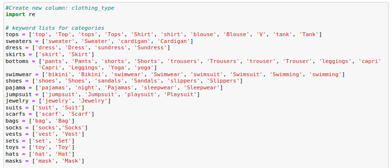
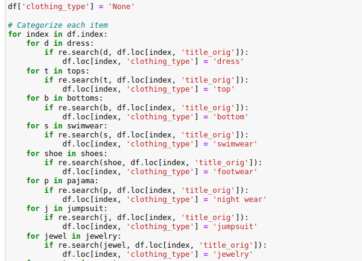
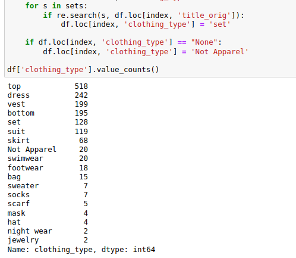
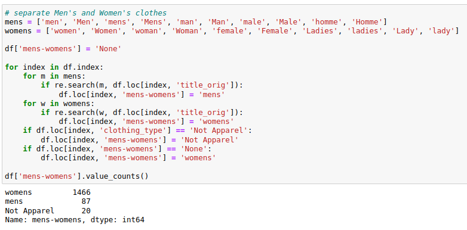
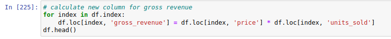
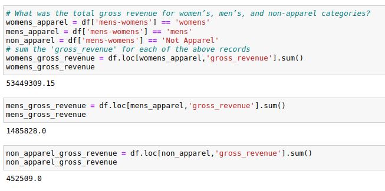
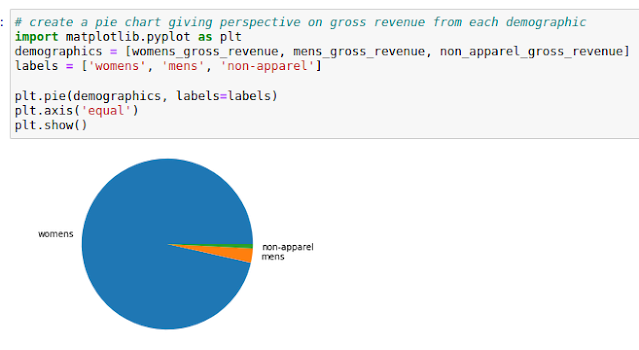
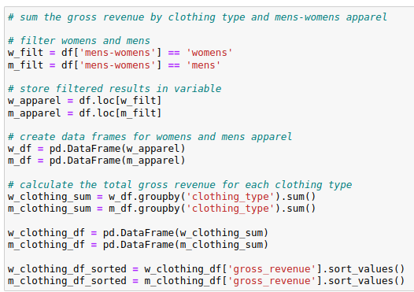
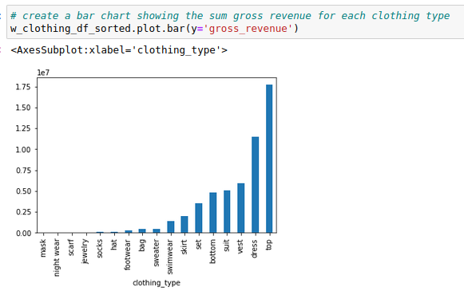

Python Demo
Exploring an E-commerce Dataset with Python and Pandas
In this post, I will demonstrate basic data exploration techniques using Pandas on a Jupyter notebook with an e-commerce dataset from Kaggle. You can access the dataset here: Kaggle: Summer Products and Sales in E-commerce.
The Jupyter notebook for this analysis is available on my GitHub: Summer Products Report.
After loading the dataset, we begin by examining its dimensions using df.shape and viewing the column names with df.columns to get a basic understanding of the data structure.
This dataset contains 1,573 rows and 43 columns, so while it's not very large, it provides a great opportunity to explore some features using Pandas. The column names are what you'd typically expect from an e-commerce dataset. Let's take a closer look at the first few rows by using df.head().
What I find interesting are the 'title' and 'title_orig' columns. The 'title' is mostly in French, while 'title_orig' is in English. Since I don’t know French, I focused on 'title_orig' and noticed that the titles are filled with keywords but lack categorization. For example, one row lists a pajama set, and another lists a dress. The dataset primarily consists of various types of apparel, all lumped together.
Considering this, the next step is to formulate research questions. Since this is an apparel e-commerce sales dataset, it seems logical to explore what specific products are being sold and determine which types of apparel are the best sellers. Additionally, the sample from the first five rows seems to feature women’s apparel, so it might be helpful to identify if there is both women’s and men’s apparel.
To better sort the styles of clothing, we will create a new column to categorize each product.
This cell was quite long, so I had to break it up into separate screenshots. As you can see from the code, the process was carried out using a series of for loops and the regex search method.
First, I created a new column called 'clothing_type' and set the initial value of each product to the string 'None'. Then, I compiled a list of common apparel types such as 'shirts', 'dresses', 'tops', and others. The challenge is that there can be multiple keywords for the same apparel type. For example, there's the keyword 'top', but also 'blouse', which is another type of top.
As these keywords were added to the lists, the corresponding product was re-categorized from 'None' to the appropriate clothing type, such as 'top', 'skirt', or 'dress'. Afterward, I could examine the rows that still had 'None' in the 'clothing_type' column, look for keywords in the 'title_orig' that I might have missed, and add them to the lists. Eventually, all products were categorized, and 20 items were classified as ‘Not Apparel’
 The next task was to sort men’s and women’s apparel, which was fairly simple and followed a similar approach to sorting clothing types. Again, there were multiple keywords to account for, such as 'man', 'male', or 'homme' for men’s apparel.
The value counts for the new 'mens-womens' column show the following results: 1,466 listings for women’s apparel, 87 for men’s, and 20 classified as non-apparel items.
It’s clear that this dataset primarily features listings for women’s apparel, but the question remains: how much revenue does each demographic category actually generate? Although there isn’t a column for ‘gross revenue’, we can easily calculate it using the data provided. By looping through each row and multiplying the ‘price’ by the ‘units_sold’, we can determine the gross revenue for each listing.
Now that we have the gross revenue for each product we can sum the gross revenue for each demographic category.
Clearly, the women’s demographic generated the most revenue, with over 53 million Euros, while the men’s demographic brought in nearly 1.5 million Euros. To put this into perspective, we can visualize the distribution with a pie chart.
Next, we can dive deeper into the dataset to identify the gross revenue for the top three products from each demographic. This can be done easily using the .nlargest method.
I looked up each row to identify the product type and added it to a table:
Women’s apparel top 3 gross revenue in Euros:
214 - 800,000.0 (vest)
401 - 750,000.0 (dress)
1018 - 700,000.0 (top)
Men’s apparel top 3 gross revenue in Euros:
1215 - 260,000.0 (overalls)
1418 - 160,000.0 (top)
244 - 95,000.0 (shorts)
Non-apparel top 3 gross revenue in Euros:
1020 - 380,000.0 (kid’s pool float)
404 - 24,000.0 (water toys)
1341 - 10,000.0 (cellulite cream)
From this table, we can see that the third-highest item in women’s apparel is a top or shirt, which brought in 700,000 Euros, while the top item for men’s apparel is overalls, with a gross revenue of 260,000 Euros. The top-grossing non-apparel product is a kid’s pool float, bringing in 380,000 Euros; however, revenue drops sharply to 24,000 Euros for the next item.
This provides more insight into the dataset: it primarily features women’s apparel, with no men’s or non-apparel items significantly impacting the overall revenue. For further analysis, we could create separate data frames for men’s and women’s apparel. Creating subsets allows us to focus more deeply, while the 20 non-apparel items could be dropped based on stakeholder interests.
The next part of this analysis examines the gross revenue for each clothing type in the men’s and women’s apparel subsets. The code in the Jupyter notebook demonstrates how to create these subsets and calculate the total gross revenue for each clothing type.
Now that the gross revenues from each clothing type have been summed and sorted, creating a bar chart is straightforward. The following bar chart displays women’s apparel sorted by category, showing gross sales for each.
In summary, the women’s apparel data reveals that while vests were the top-selling individual item, tops and dresses brought in the highest overall revenue. For men’s apparel, the top-selling clothing type was bottoms, with overalls as the leading item in gross revenue. Another interesting insight is the popularity of ‘sets’—listings that bundle items like a shirt and shorts—which ranked sixth in women’s apparel revenue. This could provide valuable direction for targeted marketing strategies.
This basic exploration has provided a solid overview of the dataset’s composition, giving us insights into top-performing products and potential areas for further analysis, such as examining seller data or investigating trends in women’s tops. These findings serve as a foundation for deeper data-driven insights into e-commerce sales patterns.